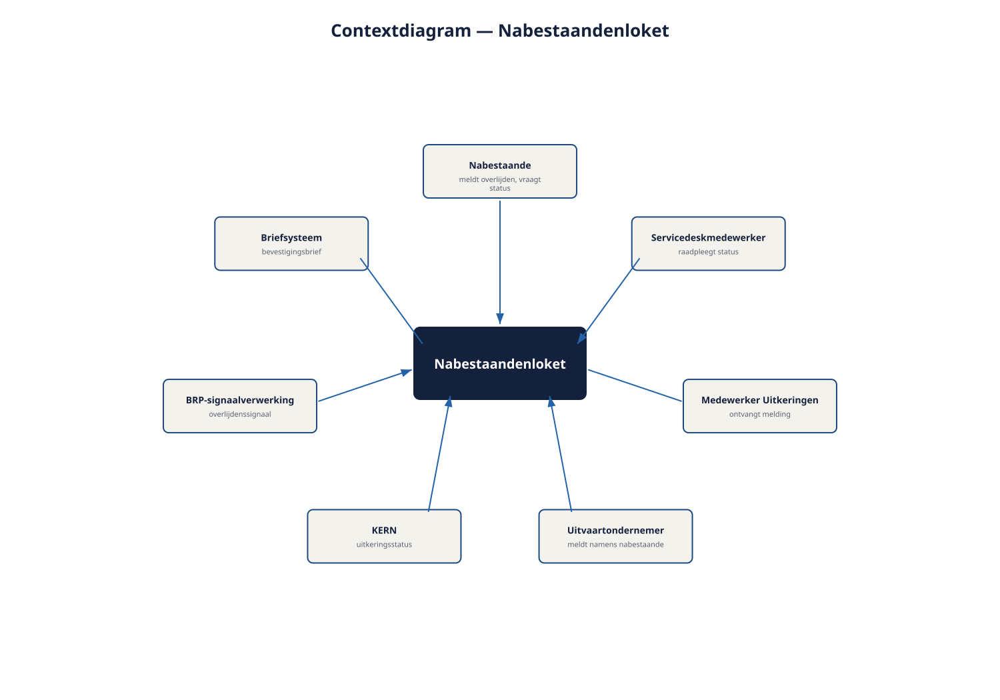

Deel 2 — Fundamentele principes, systeemgrens en context
Slidedeck · Ductus-cursus Requirements engineering · niveau 1 · deel 2 van 10 · 32 slides
Slide 1 — Titel
Principes, systeemgrens en context
Het eerste gereedschap
Cursus Requirements Engineering — Niveau 1, deel 2
Ductus
Slide 2 — Vandaag
- Negen principes die de technieken overleven
- Systeem, systeemgrens, context, contextgrens
- De grijze zone: het interessantste deel van het werk
- Het contextdiagram
- De grens verdedigen
- Bevinding R1 sluiten
Slide 3 — Technieken veranderen.
Principes vertellen je waar je op moet letten wanneer de techniek je in de steek laat.
Slide 4 — 1. De negen principes
Slide 5 — Waar gaat het om?
- Waarde is de reden van bestaan
- Belanghebbenden bepalen wat waarde is
- Gedeeld begrip is het echte product
- Context bepaalt betekenis
Slide 6 — En verder
- Probleem, eis en oplossing zijn verstrengeld
- Valideren kan niet aan het eind
- Requirements veranderen — reken erop
- Verder kijken dan de gestelde vraag
- Systematisch werken, met beleid gedoseerd
Slide 7 — Figuur 2-1

Slide 8 — Het functioneel ontwerp van WGP 2.0 was compleet.
En waardeloos.
Compleetheid was het doel geworden.
Slide 9 — Twee principes met een waarschuwing
- Verandering opvangen ≠ verandering accepteren
Weten wat het raakt en wat het kost — dan pas kan iemand kiezen
- Verder kijken ≠ ontwerpen
Je toont mogelijkheden. Je verkoopt niet en je beslist niet
Slide 10 — Opdracht 2.1 — Welk principe wordt geschonden?
Zes situaties. Benoem het principe en wat er anders had gemoeten.
Individueel · 15 minuten
Slide 11 — 2. Systeem en context
Slide 12 — Vier begrippen, twee vragen
| Begrip | Wat het is |
|---|---|
| Systeem | Wat we maken of veranderen |
| Systeemgrens | Bouwen wij dit? |
| Context | Alles daarbuiten met invloed |
| Contextgrens | Moeten we dit kennen? |
Slide 13 — Figuur 2-2

Slide 14 — Het BRP-signaal valt buiten de systeemgrens.
En ruim binnen de contextgrens.
Wie dat niet weet, bouwt een loket dat meldingen dubbel verwerkt.
Slide 15 — De grijze zone
- Statusinformatie: uit KERN, of houdt het loket zelf status bij?
- De brief: briefsysteem, of genereert het loket hem?
- Machtiging uitvaartondernemer: loket, of bestaand relatiebeheer?
Niet meteen beantwoorden. Wél zichtbaar maken en toewijzen.
Slide 16 — De lijst "grens open"
| Vraag | Mogelijke antwoorden | Wie beslist | Uiterlijk |
|---|---|---|---|
| Wie houdt de status bij? | loket / KERN | Milan + Faisal | vóór ontwerp meldstap |
Grijs op een lijst is beheersbaar. Grijs in twee hoofden wordt een conflict bij acceptatie.
Slide 17 — Zonder grens is elke uitbreiding een detail.
Met grens is elke uitbreiding een besluit.
En besluiten zijn zichtbaar, toewijsbaar en herroepbaar.
Slide 18 — Opdracht 2.2 — Binnen, buiten of grijs?
Tien elementen van het Nabestaandenloket.
Bij grijs: welke vraag, en wie beantwoordt hem?
Tweetallen · 20 minuten
Slide 19 — 3. Het contextdiagram
Slide 20 — Wat er wél op staat
- Het systeem als één blok, met naam
- Externe entiteiten: rollen, systemen, organisaties
- Uitwisselingen met richting en een inhoudelijke naam
Slide 21 — Wat er níet op staat
- De werking binnen het systeem
- De volgorde van stappen
- Protocollen en techniek
- Schermen
Slide 22 — Figuur 2-3

Slide 23 — Drie vragen die het meeste opleveren
- Ontbreekt er iemand? → elke ontbrekende entiteit is een groep die straks verrast wordt
- Klopt de richting? → wie is eigenaar van de waarheid?
- Binnen of buiten? → de grijze zone
Past het niet op één A4: te ruime grens, of te veel detail.
Slide 24 — Opdracht 2.3 — Teken het contextdiagram
Eén A4 · inhoudelijke namen op de pijlen · plus een lijst "grens open" met minimaal drie punten
Groepjes van drie · 30 minuten · daarna rondgang
Slide 25 — 4. De grens verdedigen
Slide 26 — Drie klassiekers
| Zij zeggen | Jij doet |
|---|---|
| "Dat is toch maar een kleinigheid" | Buiten de grens benoemen, gevolgen tonen, besluit teruggeven |
| "Dat hoort er logisch bij" | Vragen naar de behoefte eronder |
| "Dan hebben we straks twee systemen" | Serieus nemen, beide consequenties voorleggen |
Slide 27 — Feiten, opties en consequenties.
Het besluit ligt bij anderen.
Voor de tweede keer deze cursus. Niet voor de laatste.
Slide 28 — Wat verandert er als je iteratief werkt?
- De grens wordt explícieter, want er wordt vaker over gepraat
- Per iteratie bevestigd of bijgesteld — maar bewust
- De valkuil is niet dat de grens verschuift, maar dat hij ongemerkt verschuift
- Lichtste gereedschap dat werkt: een actuele "grens open"-lijst
Slide 29 — 5. Bevinding R1
Slide 30 — R1 gesloten
| Bevinding | Wat je nu hebt |
|---|---|
| Geen expliciete systeemgrens; 41% scopegroei | Vastgelegde en gedeelde systeemgrens |
| Contextdiagram als gespreksinstrument | |
| "Grens open"-lijst met eigenaar en datum | |
| Gespreksvorm om de grens te verdedigen |
Slide 31 — Wat je nog niet hebt:
zekerheid dat je iedereen kent die iets over die grens te zeggen heeft.
Slide 32 — Volgende keer: deel 3
Belanghebbenden en requirementsbronnen
Daarmee sluiten we bevinding R2.